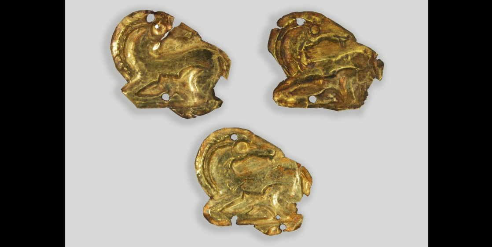
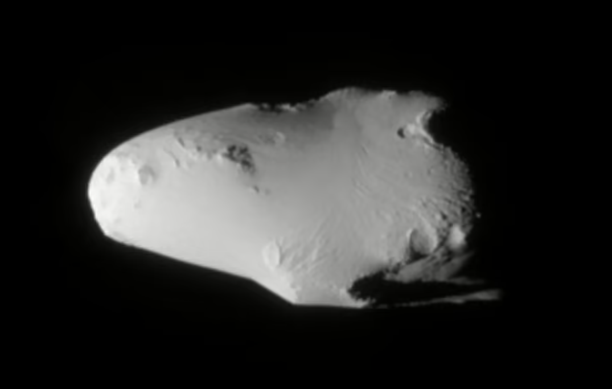
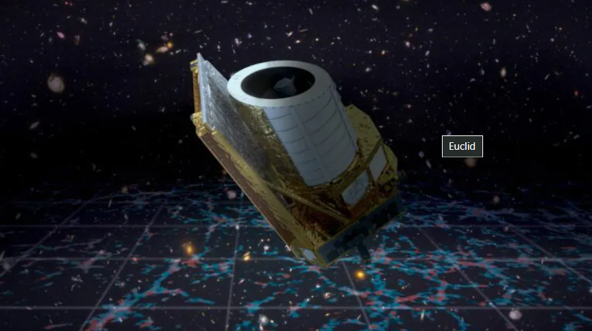

Останні новини

Новина 1
Дата публікації: 16 жовтня 2024
Короткий опис новини 1. Представники Національного музею історії України показали скіфські золоті пластини у “звіриному стилі”
Читати далі

Новина 2
Дата публікації: 16 жовтня 2024
Короткий опис новини 2. У Сатурна нарешті з’явився троянський астероїд
Читати даліНовина 3
Дата публікації: 16 жовтня 2024
Короткий опис новини 3. Китай вивів на орбіту нову групу супутників, — CGTN
Читати далі

Новина 4
Дата публікації: 16 жовтня 2024
Короткий опис новини 4. Телескоп Euclid показав перші зображення зі свого «космічного атласу»
Читати даліНовина 5
Дата публікації: 16 жовтня 2024
Короткий опис новини 5. Ріст батьків не визначає зросту дитини
Читати далі